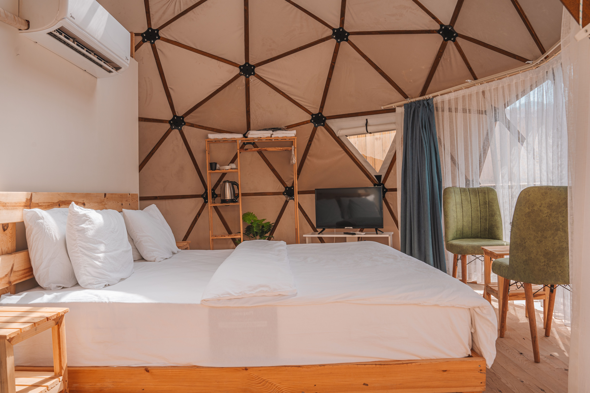
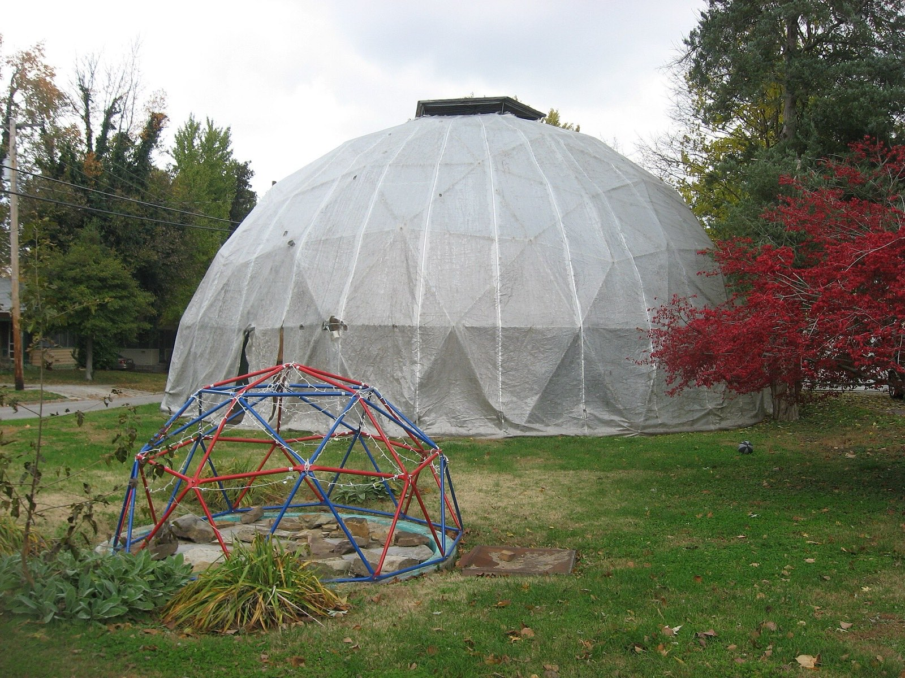

Geodesic Dome Homes
Round, striking, weirdly efficient, and quietly divisive. A geodesic dome home can cost less to heat, shrug off a hurricane, and still be a nightmare to insure. This guide gives you the real 2026 numbers, the honest downsides most dome sites skip, and a clear answer to the only question that matters: should you actually build one?
At a glance: is a dome home worth it?
- Cost: a finished dome home runs $100 to $250 per square foot ($130 to $200 is typical), about the same as a normal house. A bare kit is $20,000 to $70,000, but that is only the shell.
- Where you save: a dome uses roughly 38% of the material a box home needs and costs 30 to 60% less to heat and cool. Do the labor yourself and you can cut total cost up to 50%.
- Where it bites: leaks, hard financing (20 to 30% down), tricky resale, and curved walls that fight your furniture.
- Toughest of all: a monolithic concrete dome earns a FEMA "near-absolute protection" rating against Category 5 hurricanes and EF5 tornadoes.
Here is the thing nobody selling dome kits will lead with: a geodesic dome is a genuinely brilliant structure that is also a genuinely stubborn house to finance, seal, and sell. Both of those are true at once. If you go in knowing the trade-offs, a dome can be one of the most efficient and storm-proof homes you will ever own. If you go in dazzled by the photos, the seams and the paperwork will find you. Let's do this with clear eyes.

What a geodesic dome actually is
A geodesic dome is a shell built from a lattice of triangles that together approximate a sphere. Triangles are the trick: unlike a square, a triangle cannot deform without changing the length of its sides, so a skin of them spreads any load, wind, snow, or its own weight, across the whole structure instead of concentrating it on posts and beams. That is why a dome can span a big open room with almost no interior support and very little material.

The architect R. Buckminster Fuller patented the modern geodesic dome in 1954 and spent his life arguing it was the most efficient enclosure humans had ever drawn. He had a point. For the same floor area, a dome uses roughly a third of the material a rectangular house needs, and its low surface-to-volume ratio means far less skin for heat to escape through.
The types of domes (they are not all the same)
"Dome home" gets used loosely, and the differences matter enormously for cost, leaks, and durability. There are three families you will actually run into, plus one you will sleep in on vacation.
- Geodesic domes: the triangulated frame you picture, usually wood or steel struts with panel infill. Classified by frequency (written 1V, 2V, 3V, 4V): the higher the frequency, the more triangles, the rounder and stronger the shell, and the more parts to cut and seal. Most homes are 3V. You will also see them built as a half-sphere or, for more usable wall height, a "5/8 sphere" that rises past the equator.
- Monolithic domes: a single continuous shell of steel-reinforced concrete sprayed over an inflated form ("airform"). No struts, no seams, so almost nothing to leak. These are the tanks of the dome world.
- Aircrete and concrete domes: poured or foamed-concrete shells, popular with owner-builders chasing low material cost. Strong and fireproof, but heavy and skill-intensive to get right.
- Fabric glamping domes: a geodesic steel frame under a tensioned fabric cover. Not a permanent house, but a fast, cheap way to enclose a striking, tent-like space, which is why resorts love them.
Here is how the three home-grade families stack up on the things that decide whether you will be happy in five years:
| Geodesic (frame) | Monolithic (concrete) | Yurt (for contrast) | |
|---|---|---|---|
| Leak risk | Higher (many seams) | Very low (one shell) | Moderate (fabric roof) |
| Storm resistance | Good | Best in class (FEMA-rated) | Limited |
| Lifespan | 50–75 yrs | Centuries | 15–30 yrs |
| DIY-friendly | Yes, with a kit | No, specialist crew | Very |
| Typical use | Homes, cabins | Homes, shelters, schools | Cabins, glamping |

What a dome home actually costs in 2026
Let's talk real money. A finished geodesic dome home costs $100 to $250 per square foot, with most projects landing in the $130 to $200 range. That is roughly the same per-foot cost as a conventional wood-frame house ($100 to $200), so the popular idea that domes are dirt cheap is mostly a myth. What actually changes the number is how much of the work you do yourself.
| Build path | Cost / sq ft | You save | Reality check |
|---|---|---|---|
| DIY / owner-built shell | $80–$180 | Up to 50% | Only if you have the skills, tools, and months of time |
| Owner-finished | $110–$220 | ~30% | You finish the interior; pros do the shell and trades |
| Turnkey (contractor) | up to $250 | n/a | Someone else coordinates every vendor |
| Conventional house | $100–$200 | (baseline) | Your comparison point |
The kit is only one slice. A geodesic dome kit runs $20,000 to $70,000 (most prefab kits sit at $30,000 to $50,000), and that buys you the shell, not a home. A monolithic dome is priced differently: the bare shell-and-floor package from specialist builders runs about $65 to $100 per square foot, and a finished monolithic home costs roughly double that.
Then come the costs the glossy photos never mention. Budget for these before you fall in love:
- Site prep: $1,500 to $5,000 for clearing and grading.
- Foundation: $6 to $14 per square foot of concrete.
- Windows and doors: rectangular openings in a curved wall need custom framing, which costs more and takes longer than in a boxy house.
- Roofing over the shell: few roofers know how to shingle a dome's triangles, so expect a premium or a specialty membrane.
- Trades: plumbers, electricians, and HVAC techs still charge normal rates, dome or not.
Rough project totals help set expectations: a small 600 to 1,000 sq ft dome can start around $50,000 to $100,000-plus, a 1,000 to 2,000 sq ft family dome runs $100,000 to $300,000-plus, and anything past 2,000 sq ft starts near $300,000 and climbs fast. For how these numbers behave in a specific market, our cost to build a house in Panama guide breaks down the same line items region by region.
Build it yourself vs buy a kit
This is the fork in the road, so let's be concrete about both directions.
The DIY route
You buy plans (free ones exist, and paid sets run $50 to a few hundred) or nothing at all, then cut and connect the struts yourself. The heart of a DIY dome is the hub: the connector where struts meet. You can build wood domes with plywood gusset plates, buy steel hub kits, or use proprietary connectors. A dome calculator (several are free online) gives you the exact strut lengths for your chosen size and frequency. This is where the up-to-50% savings live, and also where a summer of your life goes. Be honest about your skills before you commit.
The kit route
A kit ships you a pre-engineered frame (and often the cover or panels) with everything cut to length. It costs more than raw lumber but saves you the math, the miscuts, and a lot of weekends. The names worth knowing:
- Pacific Domes: fabric-covered galvanized-steel frames. A 16-foot kit starts around $5,500 including cover, a door, windows, and anchors. Great for glamping and larger commercial spans.
- Ekodome: hard-shell panel kits with a 10-year warranty and individual panel replacement, in five sizes up to a 30-foot, 695 sq ft model. A favorite for durable single-unit builds.
- Natural Spaces Domes: wood-framed dome-home shells for people building an actual residence rather than a tent.
A dome is also a cousin of the other alternative builds worth weighing; if you are comparing paths, our alternative building methods guide lines domes up against earthbag, straw-bale, and container homes.
The honest downsides (why domes aren't everywhere)
If domes were purely better, every subdivision would be full of them. They are not, and the reasons are practical, not aesthetic. Here is what actually trips people up.
- Leaks. A geodesic shell has a lot of seams, and every seam is a place water can find. Windows and doors are the worst offenders because flat frames meet curved panels. Modern kits and better membranes have improved this, but it is still the number-one dome complaint. (Monolithic domes, being one poured shell, mostly sidestep it.)
- Financing. Most banks call a dome a "non-conforming" structure and get nervous about reselling it if you default. Expect to hunt for a specialist lender and to put 20 to 30% down instead of the 3 to 10% a normal buyer enjoys. Ask your kit vendor for lender referrals; they usually have a shortlist.
- Insurance. Many carriers have never underwritten curved architecture, so you will shop harder for a policy.
- Resale. The look that thrills you narrows your future buyer pool, and appraisers struggle to find comparable sales. Domes can sell well in the right market, but plan on more time on the market.
- Interiors and privacy. Curved walls waste rectangular furniture, and open dome plans carry sound. Partitioning a round room for bedrooms takes thought.
- Permits. The house needs the same permits as any other, but a building department that has never seen a dome may want an engineer's stamp and extra time.
None of these are dealbreakers on their own. Stacked together, they explain why domes stay a passionate niche rather than a mainstream choice, and why going in informed is worth more than any kit discount.
How long they last, and can they take a storm
This is where domes earn their reputation. A well-built geodesic dome lasts 50 to 75 years, and past 100 with quality materials and maintenance. A monolithic concrete dome effectively lasts for centuries, because reinforced concrete does not rot, rust, or feed termites.
On storms, the physics is genuinely on the dome's side. The curved shell transfers wind straight into compression against the foundation. There are no corners for wind to grab and no big flat walls for pressure to pile against. The U.S. Federal Emergency Management Agency rates monolithic domes as offering "near-absolute protection" against Category 5 hurricanes and EF5 tornadoes, certified to survive a 15-pound 2x4 fired at 100 miles per hour. During Hurricane Michael in 2018, a Florida monolithic dome nicknamed "Golden Eye" rode out 160 mph winds while nearby conventional homes were flattened. If you are building where the weather tries to kill houses, that is a serious argument.
So, is a dome home right for you?
Build a dome if you value efficiency and storm safety over resale ease, you are handy enough to DIY or patient enough to manage a specialist build, and you are staying put long enough that resale is not your first worry. Choose a monolithic dome if durability and weatherproofing are the whole point, especially where storms are serious. Look hard at the downsides first if you expect to sell within a few years or need conventional financing.
A geodesic dome home is not a shortcut to a cheap house, and it is not the leaky science project the skeptics claim either. It is a deliberate trade: you accept harder financing, careful sealing, and a patient resale in exchange for a strong, efficient, unforgettable place to live. Go in with that trade written down, and you will make a good decision either way.
Thinking about an unconventional build on your land?
SORA designs and builds on titled land across Panama, from efficient modern homes to specialty structures. If you are weighing a dome or another unconventional build, talk to a SORA architect about what your lot can actually support.
Frequently asked questions
How much does it cost to build a geodesic dome home?
A finished dome home runs about $100 to $250 per square foot in 2026, with $130 to $200 typical. A bare kit is $20,000 to $70,000 (most prefab kits are $30,000 to $50,000), but the kit is only the shell. Land, foundation, site prep, trades, and interior finishing are extra and usually cost more than the kit itself.
Are dome homes cheaper to build than regular houses?
Not by much on a per-foot basis. A dome sits in the same $100 to $200 band as a conventional house. It uses far less material (about 38% of a box home) and 30 to 60% less energy, but curved windows, doors, and finishing eat much of that saving. The real savings come from doing the labor yourself, up to 50%.
Do geodesic domes leak?
They can, and it is the most common dome complaint. Many panel seams plus rectangular openings in curved walls create places for water to find. Modern kits and membranes have improved this, but it remains a geodesic-specific risk. Monolithic concrete domes, being one continuous shell, rarely leak.
Do you need a permit to build a dome home?
Yes, the same permits as any house. The wrinkle is that many building departments have never reviewed a dome, so approval can take longer and may need an engineer's stamp. Confirm zoning and code with your municipality before buying a kit.
How long do dome homes last?
A well-built geodesic dome lasts 50 to 75 years, and 100-plus with quality materials and maintenance. Monolithic concrete domes last effectively for centuries because reinforced concrete does not rot, rust, or attract termites.
Can you get a mortgage on a dome home?
It is possible but harder. Most banks treat domes as non-conforming and want 20 to 30% down instead of 3 to 10%. Use a specialist lender; kit vendors can usually refer one who understands domes.
Are dome homes hard to sell?
They can be. The unusual look narrows the buyer pool and appraisers struggle to find comparable sales. In the right market a dome sells fine, but plan on more time on market and price against real local comps, not your build cost.
Sources & verification
Costs and ratings below were verified in August 2026. Prices vary widely by region, size, and finish, so treat these as planning ranges and get local quotes before you budget a real build.
- Monolithic Dome Institute, on durability and FEMA "near-absolute protection" ratings, monolithic.org.
- HomeGuide, 2026 dome and monolithic dome home cost data, homeguide.com.
- Pacific Domes, kit pricing and construction, pacificdomes.com.
- Ekodome, hard-shell kit sizes, warranty, and panels, ekodome.com.
Photos: dome home and glamping interior via Pexels (commercial use, no attribution required).